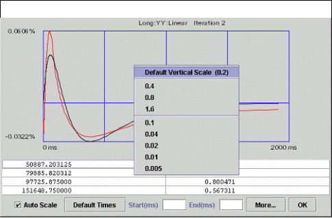
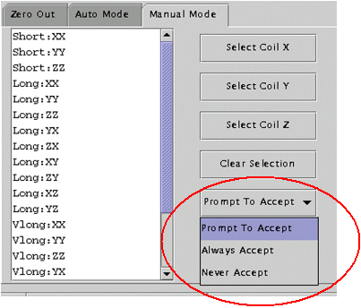
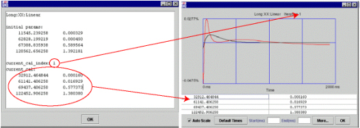
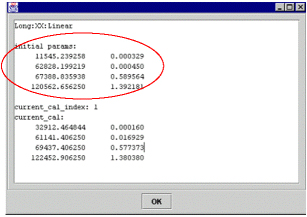
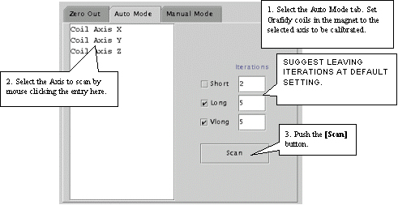
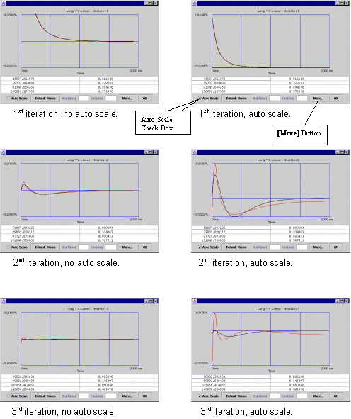
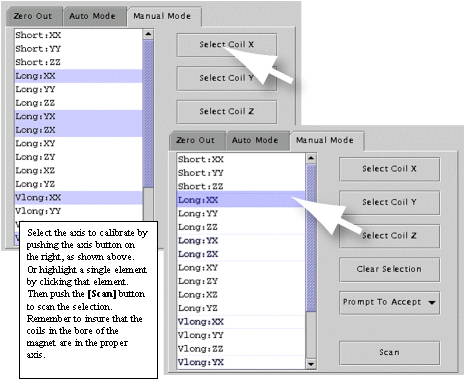

- 00000018WIA309ECF20GYZ
- id_131075281.3
- Jul 5, 2019 11:49:10 PM
Working With Grafidy 3
Examining a Fit
Refer to Figure 1. If the two lines plotted appear to be similar in shape, the fit is probably good. To get a closer look at any one plot, you can choose the “Auto-Scale” function (the auto-scaled fit may appear to worsen as the display scale changes). To focus on the front of the plot only, choose an End point (i.e. 100 ms). The default is (2000 ms).

Figure 1 has the same plots; the top one uses the default time scale (0 → 2000ms) while the lower one uses a time scale of (0 → 100ms). This effectively shows a blow-up of the first 100ms.
The measured curve (red) and fitted curve (black) in Figure 1 example have very little in common (especially in the first 100 ms, where the fitted curve is cutting through the measured curve). Consequently, it is very unlikely that further iteration will improve the eddy current compensation and eliminate this “oscillatory” behavior. In this case, the system limits have been reached. If the black curve matched the red curve more closely, then eddy current compensation would likely improve after another iteration.
When not auto-scaling, the vertical scale uses a default value of 0.2. You can change this value by right clicking on the “drawing area”, and selecting a new scale. This is useful for side-by-side comparisons. See Figure 2.

Accept Policies
There are 3 accept policies in manual mode: Prompt To Accept (default), Always Accept or Never Accept. See Figure 3.

-
Prompt To Accep shows the user what the fit looks like. The user decides whether to accept it or not.
-
Always Accept always accepts the fitted cal values. New values are accepted automatically without user intervention.
-
Never Accept never accepts the fitted cal values. This is useful for “check only” scans.
Conditions Column
To view more information about a cell value, select the cell and click the Show button.

The popup lists:
-
Initial cal values (initial parameters) of the component (long xx linear in this example) (the cal values of the component when Grafidy 3 was invoked). See Using Initial Cal Values for more information.
-
The current cal index = 1, which means currently the cal values in cal file (gafidyx.cal) and in the hardware/pre-emphasis was generated by iteration 1, and
-
The current cal values are also listed.
When an iteration (iteration 1 in this example) is finished for a component, and if the cal values are “accepted” into the cal file/hardware, the user will see current_cal_index equals to the last iteration number, and current_cal will be the same as contained in the popup of the last iteration (iteration 1 in this example) of the component.
Special cases:
-
Current cal index = 0: initial cal values is in the cal file/hardware.
-
Current cal index = -1: cal values are set to zero for the component.
-
Current cal index = -2: cal values are set to default (short time constant only).
SELECTING PREVIOUS ITERATIONS
To explain the relationship of iterations to calibration values, refer to Figure 5.

The “circled” cal values above were generated by the 2nd iteration (by fitting 2nd iteration measured curve into the set of cal values (tau/alpha’s or time constant/amplitudes)). If accepted (as is the case here), these cal values went into the cal files (grafidy(x/y/z).cal, gradecccoeff.dat) and hardware (pre-emphasis) to compensate eddy current for the next iteration (3rd iteration in this example).
The measurement of 3rd iteration is based on the compensation of the cal values “dialed in” at the end of the 2nd iteration. Clicking the more button (of the 3rd iteration popup) will show the cal values (“previous parameters”) used in the hardware/pre-emphasis when the 3rd iteration was scanned. “previous cal index” is 2 in this example shows that the cal values used were generated by the 2nd iteration.
There may be times when selecting the cal values from the previous iterations may be desirable. Using Cal Values of a Particular Iteration and Using Cal Values From A Pervious Iteration describes each way.
Using Cal Values of a Particular Iteration
Refer to Figure 6.

Using the method shown in Figure 6 will load the cal values (to cal files and hardware) generated by the iteration selected (3rd iteration in this example).
When to use: if user did not accept the cal values generated from an iteration (in particular, last iteration) or accepted the cal values but further iteration overwrote them you can move back and use the values of a previous iteration by selecting the iteration wanted and clicking Use Post. At that point the cal values generated from the selected iteration will be put back into cal files and hardware.
Using Initial Cal Values
If a component/cell in column “conditions” is selected, and the menu item Use Post-Fit Cal Parameters for Selected Cell is pushed, then the initial cal values (before any scan for the component to modify them) will be put back into the cal file.
Here a popup is duplicated to show the initial cal values (initial params) before the menu item Use Post-Fit Cal Parameters for Selected Cell is pushed. Those initial cal values will be put into the cal file by this “menu pushing”.

After the “menu pushing” and re-popup (by click “show” button, assuming cell selection in “conditions” column is not changed), the user will see initial parameters are not changed, but the current cal index is changed into 0, and current_cal are the same as initial parameters.
Using Default Short Cal Params
If a cell with a short TC (short xx, yy, zz linear) in “conditions” column is selected and then the menu item Use Default Short Cal Params is pushed, the tool will load the default short cal values for the selected component (short xx linear, for example) into the cal file. It has the same effect as 5.3.6 except it is on a component-by-component basis here (if user wants to load all xx, yy, zz shorts, he needs to do 3 times on the 3 cells), rather then one button push (Yes) to load default values for all short TC components as in 5.3.6.
Using Cal Values From A Pervious Iteration
Refer to Figure 8.

Using the method shown in Figure 8 will load to the cal values (to calibration files and hardware) used during scan of selected iteration (3rd iteration in this example), which was generated during the previous iteration (2nd iteration in this example) as the result of fitting measured curve with these cal values, and these cal values were downloaded to the hardware at the end of the previous iteration.
When to use: If the further iteration produced worse EC results than the previous iteration and user wishes to go back to the cal values which produced the better EC results (of the selected iteration).
ABORT AND EXIT
-
abort
If by some reason user want to abort the scan, he may push the [abort] button, then push real Stop Scan key on the keyboard to stop the scan. After a while (10—20 seconds or so) the grayed “scan” button becomes active again, at this time user may continue to do what he wants to do.
-
exit
The exit button will exit from Grafidy 3. It takes a while to exit because the tool is writing out the log file after exit button is pushed.
“GE SERVICE” PULL DOWN EXPLANATION
Refer to Figure 9.

If the service key is not present, many of the options will be unavailable. If the key is not available and you are a GEMS service, you can activate all options by selecting Service Password and entering the Service Password.
If you want to view a previous log file, click on GE Service and choose View Log Files. See Figure 9. After the list of log files is displayed, click on the log file you want displayed and press the OK button. See Figure 10. The result area/table will be filled up with eddy current measurement numbers.

write current cal values to cal files for all components
if a log file is loaded, user may want to write the “current” cal values to cal files for all components.
“current” cal values for a component means last “accepted” cal values for the component.
“accept” cal values means those fitted parameters which are accepted by the cal files (grafidy(x/y/z).cal) and downloaded to the hardware/pre-emphasis for the future scans.
“current” cal values are normally generated from the next to last iteration and was used by the last iteration during scan. However, after the generation of the “current” cal values several scan/iterations may follow, for example, linear component of say long xx was met target before b0 component, so while b0 is experiencing more iterations (cal values changes), the linear component does not change its cal values, so the last “accepted” cal values are generated not from 2nd to last iteration for linear but a few iterations ago.
This menu is useful when user knows that, say, a few days ago he did a good eddy current calibration, and today while he was redoing it for some reason, eddy current compensation became unusable and, worse, he forgot to save the grafidy(x/y/z).cal files before he started doing this. Fortunately, he can load the log file he generated a few days ago, and push this menu to load the “good” cal values back to the cal files (and the hardware).
write initial cal values to cal files for all components
user may want to write the initial cal values to cal files for all components, either after some iterations for some components and he decided he would rather discard his new results (back to the intial cal values instead), or he may load a log file to write the initial values (of the log file, that were in the cal files at that time when this log file was generated when Grafidy 3 was invoked).
save log file Log file is usually saved when exiting. However, user may choose to save it more often. He may save the calibration result/log (more than just grafidy(x/y/z).cal files, which are always saved) he got so far by pushing save log file menu. This is useful in case of system crash so at least partial result/log is saved.
view current attributes This menu selection will show the scanner/system information of the system user is on, such as hospital name, slew rate, gradient driver, gradient mode (whole/zoom), start time (when Grafidy 3 was invoked).
view selected log attributes
This menu selection will show the scanner/system information of the system at which this log file was generated. It could be a different system than the system user is on, or it can have a different gradient mode (whole/zoom). It certainly has a different start time and end time.

Zero Out

User can select all (components) (by clicking select all button), or on individual axis. E.g. selecting coil X axis will zero out the xx, yx, zx linear and xx b0 for long and very long terms.
User can also select individual component (e.g. long xx linear) or components (e.g. long xx linear, and long xx b0) by holding ctrl key on keyboard when clicking the components on the list.
The selected components are highlighted. The selection itself will not zero out anything. User needs to click zero out cal values to actually zero out cal values in cal files (grafidyx/y/z.cal).
Naming convention for a component: the 1st letter refers to gradient axis, the 2nd letter refers to coil axis, for example, yx means gradient is on y axis, but the coils should be place on the x axis.
Auto Mode

Each component of the axis (e.g. long:xx, long:yx, long:zx, vlong:xx) will run a maximum number of iterations. 5 iterations for long and 5 for very long by default. Also by default short TC is not selected (therefore will not be calibrated). If a target (about half of the spec for long on-axis) is reached before the maximum number of iterations is reached the system will stop doing iterations for the component.
Eddy Currents
User can check the eddy current measurement and fitting by clicking in any cell that has values filled in. Then click Show button. Refer to Figure 14 for interpreting graphical data.
In the left column with auto scale turned off (so they have same vertical scales) from 1st→2nd→3rd iteration, the residual eddy current become smaller and smaller.
In the right column from 1st→2nd→3rd iteration, viewing the data in Auto-Scale to spread the plot views out (the plot is scaled from minimum values to maximum values, for the 1st iteration the scale is ~1.8, 2nd iteration ~0.06, 3rd iteration ~0.015 in this example). While the residual eddy current becomes smaller when iterations are going on, the quality of the fit between measured curve and fitted curve (goodness of fit) becomes poorer. When those 2 curves have little in common, which is seen in iteration 3, it is not likely that any further iterations will improve much, and it is the time to stop iteration because system limit is reached.

Click More to show coil positions, Spec values, Target Values and measured values. See Figure 15 and Figure 16. You will need to scroll UP to get to the position values.


Manual Mode

Select the Manual Mode tab. Select the desired terms, and then press Scan. See Figure 17.
Naming convention for a component: the 1st letter refers to gradient axis, the 2nd letter refers to coil axis, for example, yx means gradient is on y axis, but the coils should be placed on x axis. Make sure coil axis in the magnet and the selection is consistent.